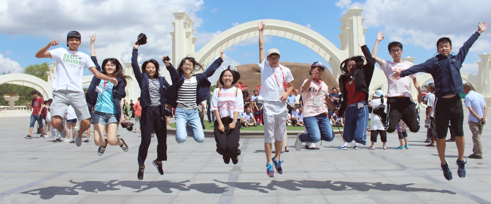

中國行程紀錄

7/21
走
下飛機，迎面而來的是清新乾爽的微風，而非先前所擔憂的霧霾。望著頭上那一片蔚藍，在心底告訴自己:「拋開以往的刻板印象，用最開放的心胸仔細感受這座城市吧!」
俗諺有云「小別勝新婚」，這句話用來形容我們在相隔四天後的重逢再也合適不過。少了初次見面時的那份羞澀，我們興奮地奔向彼此。北大同學們的熱情，就如同那天北京鮮爽的空氣般令人驚艷。
來到一個和台灣迥異的環境，竟感到有些不知所措。眼睛想將北京的街景清楚的照入腦中；耳朵想收錄導遊所說的一字一句；口舌想細品手中那份來自一家「火」得仿冒店滿街的烘焙坊的點心，然而處理五官訊息的腦卻只有一個。於是在一片迷糊混亂中，北京初印象於焉誕生。
今日下榻於光華管理學院科研樓，是一棟集住宿、餐飲和學術會議於一身的建築。客房內的陳設和台灣的飯店並無太大差異，除了立燈旁的貴妃椅和往後幾天都會見到的220v插座。
夜幕低垂，為歡迎晚宴揭開了序幕。首先映入眼簾的是一盤上頭淋了藍紫色醬汁的白色泥狀物。當我正納悶著為何要用藍莓香草冰淇淋作為前菜時，一旁的北大同學便說那是山藥泥佐藍莓醬，為宴席中常見的前菜。而隨後的餐點中，除了油亮滑嫩的烤鴨，令人印象深刻的還有口味獨特的炸醬麵以及雕刻精美的水果。
食物固然美味，但北大小或辦們精采的演出卻更是吸引人。隨著節目的開始，大家紛紛放下筷子，圍在前台邊觀賞。開場節目是一套意境十足的舞蹈，名曰；「凱翔舞」；緊接著是教人捧腹不已的「白蛇前傳」；最後以器樂合奏大家耳熟能詳的卡通組曲，為晚宴做了個完美的收尾。
晚宴並不是今日最後一個行程。吃飽喝足之餘，北大同學們安排了精采的RPG活動讓我們認識北大校園。北大校園一項令人欣羨之處便在於其靜謐，在遊走校園的過程中鮮少遇到其他人，即使見著了，也多是其他小組的成員。而各種充滿小巧思的提示也是遊戲的亮點。其中一道提示「我的名字，你的major」，各位猜猜是甚麼?答案是「元培」。
遊戲結束後，我們這組仍興致高昂。於是便聚集在其中兩人的房間內玩牌，直到睡意壓過興奮之情，才依依不捨地回到各自的房間。
7/22
今
早的行程或許是整趟旅程中最具有商管色彩的一段:參訪ofo公司。公司內部空間給人的感覺活潑而輕鬆，就像ofo執行長的演講一樣。他們並未高談闊論自己的成功，而是真摯的和我們分享創業的心路歷程。走出大樓的旋轉門，回想著方才所聽到的點點滴滴，不禁在心中感嘆「有為者亦若是!」
下午原先要前往天安門廣場，卻因等待入場時間可能過於冗長而直接改至故宮遊覽。和台北故宮不同，參觀北京故宮主要是欣賞建築。雕梁畫棟恐怕還不足以敘說眼前宮殿的華美。歲月磨不去它的金碧輝煌，它就在那兒，以亙古不變的帝王之姿，供後人景仰。漫步在其間，只覺得從前自詩詞中認識的瓊樓玉宇、桂殿蘭宮，現在都活生生的立在眼前，教人煞是感動。
這一天的晚餐比較特別，各組將自行於北京市內「覓食」。尋尋覓覓，開開心心，走走停停走走；我最終決定來點刺激的:去唇辣號吃鴛鴦鍋。沒想到我們和另外兩組很有默契的選了同一家店!菜單上有許多台灣火鍋店罕見、甚至是沒有的食物，如豬黃喉、蝦滑、巴蜀糍粑等等。這家店的紅鍋部分辣得十分帶勁，不過一會兒工夫便已消耗了三扎酸梅汁。而我們這組總是在等火鍋料煮熟時敬酒，敬完彼此敬別組。如果敬完別組食物還是沒熟?那就打開微信玩一局「你畫我猜」吧!
這一天的晚餐比較特別，各組將自行於北京市內「覓食」。尋尋覓覓，開開心心，走走停停走走；我最終決定來點刺激的:去唇辣號吃鴛鴦鍋。沒想到我們和另外兩組很有默契的選了同一家店!菜單上有許多台灣火鍋店罕見、甚至是沒有的食物，如豬黃喉、蝦滑、巴蜀糍粑等等。這家店的紅鍋部分辣得十分帶勁，不過一會兒工夫便已消耗了三扎酸梅汁。而我們這組總是在等火鍋料煮熟時敬酒，敬完彼此敬別組。如果敬完別組食物還是沒熟?那就打開微信玩一局「你畫我猜」吧!
晚餐之後上哪去?總是越夜越美麗的我們絕不會這樣就回飯店休息。一番討論後，大夥兒決定搭地鐵去唱KTV。
北京的地鐵和台灣的很相似，不過北京地鐵進站時要安檢。而當地的KTV不論是擺設還是歌曲選單內容和台灣也沒有甚麼不同。有趣的是，許多我們常聽的歌也為北大同學所熟知。一片歌聲與歡笑聲中，在大陸的第二天就這樣悄悄溜過……。
7/23
23
日的一大清早，北京依然涼爽，雲層遮蔽了熾熱的烈陽，預告著今日的旅程將同樣在涼爽中度過。用完早飯後，我們便驅車前往北京著名的景點-北海公園。北京雖不靠海，但由於有趣的歷史典故，只要境內有湖泊，亦或是大型的水潭，都會被稱為「海」，因此，我們即將漂流於這獨特的汪洋中。
北京為著名的古城，已有八百多年的歷史，歷經了各個王朝的更迭，從最早的遼、金年間開始茁壯，又歷經了元、明、清三代的洗禮，使其飄盪著濃郁且極富歷史韻味的氣息，北海公園的拜訪便再次作證了此種感受，雖然最原始的建築物已經經過一定的人為修復，但遼、金時期所建造的建築格局依然還隱藏在我們腳下的每一步，彷彿在步伐中看見了北京城這八百多年來的興衰，每一朝代的起落與滄桑。
我們也到了廣大的「海面」遊了一遭，搭著造型極富傳統中華文化設計的渡輪，緩慢的橫跨廣闊的水面，岸邊的楊柳低垂，青綠色的枝條慵懶地在岸邊輕巧的隨風擺動，在車水馬龍的北京城內，已鮮少有如此清幽且靜謐的境地，古人清閒之時的心境似乎在這短暫的渡河中被體現了。
時間總是在匆匆中度過，一轉眼也已是日正當中了，我們便在御膳坊中用餐，據傳，御膳坊在古時為專為皇帝提供餐點的餐廳，雖然時過境遷，傳統的封建制度早已不復見，我們仍有機會在此種氛圍中體驗古時皇家貴族享受高級餐點時的快活，除此之外，我們也品嘗了道地的北京菜，雖非山珍海味，但我們似乎從味覺的享受中品味了北京最真實的文化，領悟了最真實的北京。結束用餐後，我們暫時與北京道別，前往更北方的都市-哈爾濱，但北京古城的韻味，卻依然長存於每位同學心中，難以忘懷。
7/24
一
早，我們便驅車前往世界最大的東北虎養殖基地——東北虎林園。在虎林園中，我們搭著有著「防護措施」窗戶的小巴士，近距離地觀看著體型龐大的老虎，對許多夥伴來說，這可是頭一遭和老虎的近距離接觸呢！我們紛紛拿起手機、相機，對著鐵窗外的老虎盡情拍照。隨後，則有請專家餵食老虎的活動。有趣的是，夥伴們紛紛在紀念品店購入了小老虎玩偶、有著虎掌外觀的手套、綴著「虎耳」的髮箍、甚至是連接著「虎尾」的腰帶。拍照時戴著這些「道具」，格外逗趣。
下午，我們來到了久負盛名的聖索菲亞教堂。有著綠色洋蔥頂的它，幾乎可說是哈爾濱數一數二著名的建築呢！我們在廣場中拍了為數不少的照片後，才心滿意足地進入現已改為博物館的教堂參觀，並對哈爾濱當地的歷史及建築有了更為充分的了解。
晚餐前，我們有了一段在中央大街的自由時間。夥伴們紛紛在各具特色的商店裡採購能夠代表當地的紀念品。另外，以「冰棍」聞名大陸的「馬迭爾冰棍」本店亦在中央大街上，大夥兒當然不能放過這個嚐鮮的絕佳機會。走在中央大街上，人手一支乳香四溢的冰棍，甚是有趣。大街盡頭的抗洪勝利紀念碑亦為哈爾濱十分著名的景點，再走過去便是著名的松花江，夥伴們在此發揮創意、拍出各式令人莞爾的照片，度過了一段難忘而美好的午後時光。
7/25
早
上七點二十分，我們從飯店出發，坐著大巴前往與哈爾濱相距400公里的五大連池，從車內向窗外看去，一路上盡是稻田，樹林等自然景觀。將近五個小時的車程中，北大同學為我們準備了一個名為十八猜的小遊戲，規則是在十八個問題之內猜對出題者心中所想的人名，可能是因為大家本來就腦筋靈活，又或者是因為相處久了產生默契，大多數的答案一下子就被猜出來了。
用過午餐，我們來到有著天然火山博物館之名的五大連池風景區，乘坐電瓶車進入園區，伴隨涼風映入眼簾的，是黑龍山在兩百多年前噴發留下的各種火山岩石，和一般的石頭比起來，這些火山岩石的節理較為明顯，看起來顯得破碎尖銳，卻也有不少苔癬、草叢生長在岩石的隙縫之中，除了讓人感嘆它們頑強的生命力，綠色植物的點綴也讓冷硬的岩石地形變得柔和可愛，再向遠方看去，還能看見瓦盆形狀的火燒山。走在木板棧道上，兩旁是由岩漿擠壓而成的翻花熔岩，看著一片黝黑、寸草不生的石海，彷彿能想見火山噴發時，岩漿順著坡地汩汩流下的情況。參觀完石海，我們開始攀登黑龍山，黑龍山距離地面約166公尺，並不算高，沿著石階緩步向上，不到一小時就能到達火山口，火山口中央是凹陷下去的，就像一個巨大的漏斗。很遺憾因為時間不夠，我並沒有繞著火山口走一圈，只稍微走了一小段到更高的地方，近距離觀賞火山口崎嶇不平的地形，轉頭一看，則可以看見五大連池和平地上青綠的稻田，遠方生機繁榮的景色對比眼前險惡的火山地貌，別有一番趣味。
五大連池景區除了火山地形之外，另一個知名特色就是世界三大冷泉之一的礦泉水了。這裡的泉水各自具有不同的療養功效，而今天到的就是可以明目的二龍眼泉，泉水從泉源處兩個龍頭的口中湧出，我們拿著空瓶依序取水和洗臉，雖然短時間內無法看出冰涼泉水對於明目的功能，提神醒腦倒是十分有效。
飽餐豐盛的全魚宴之後，我們回到飯店休息，時間尚早，許多人把握相聚的時刻，到樓下的露天電影院看電影，或是在房內打牌聊天。更晚一點，還有人約著去看星星，黑暗的夜空中，北斗七星、夏季大三角變得更加顯而易見，遠離繁華喧鬧的都市，也遠離光害的干擾，我們才真正看見繁星展露出的光芒。
7/26
早
上在飯店享用過具當地特色的早點後，我們前往冰洞。冰洞位於數十公尺的地下，因靠近冰川凍土層，而可長年保持在零下五度至十二度的低溫。對於地處亞熱帶地區台灣的我們而言，能在夏季看到自然的冰雕著實是個奇觀，也讓我們熱情滿滿，身著輕薄衣物卻能其中盡情拍照，而不被寒氣逼出洞外。
昨天參觀了五大連池的地質公園，登上老黑山的山頂，一覽老黑山火山口的壯闊與五大連池的全景，今天，我們同樣前往欣賞了火山噴發所留下的特殊地質景觀──龍門石寨。龍門石寨的石海景觀形成年代約於數十萬年前，當時一次的大型火山噴發，導致塊狀的熔岩流沿著坡道逐漸滑落、沉降而凝固於此。站在觀景台至高處，遙望蒼穹與石海，抑或是漫步小徑，倘佯於蓊鬱山林，在龍門石寨的每處，都彷彿將自身回歸於最原始的自然。
在五大連池的最後一個景點，當然不能錯過此處最知名的翻花泉，翻花泉的泉水富含礦物與鐵質，喝下有鐵鏽味與氣泡水的感覺，對治療疾病有一定功效，大多數的同學對這樣的泉水感到十分新奇，雖然喝起來的感覺評價不一，但卻是非常新鮮的體驗。
下午即搭車返回哈爾濱，準備晚上欣賞北大同學用心準備的惜別晚宴。不普通的普通的歌，博得滿堂彩的逗趣相聲，情節縝密處處有亮點的你好打劫，令人刮目相看的牽絲戲，「呀！你推我」的自食其果，回顧旅途點滴的影片，說出真心話的點歌揭曉，還有最喜歡最喜歡你們的我喜歡。每個節目都是那麼的美好，就像營歌好好一樣，「在所有流逝風景與人群中，你對我最好」在十四天的行程中，我們用最澄澈的心、最單純的自己好好的對待彼此，也期待往後，這段美好的回憶，我們不會輕易忘掉，而是讓它能延續下去。
7/27
離
別前的最後一夜，在哈爾濱的夜晚裡，有冷得讓人打起哆嗦的微風，有零星還未休息的招牌照亮的中央大街，還有在六十雙閃爍清澈的眼眸中蕩起層層漣漪的松花江。
那晚，大家不約而同地一起通宵，似乎如此時間就會流逝的慢一些，似乎如此就能多增加點彼此相處的時光。有些組如同既往的玩著uno玩著狼人殺，遊戲裡我們的玲玲笑語似乎嗅不到一絲離別的氣味；有些組圍著彼此徹夜暢談，凝視著你我的雙眼，那刻我們都把最純粹的自己袒露在彼此面前，用最澄淨的心靈分享著我們的故事；有些組拉著小夥伴們的手一同夜遊哈爾濱，吃著紅腸捧著烤冷麵喝著啤酒，因為有你們溫暖地依偎開懷地大笑，所以那天的午夜似乎也沒那麼的寂寞，那麼的冷了。那夜的我們都捨不得闔上雙眼，怕閉上眼後會太快的迎來明天，會太快的面對離別，就算我們都知道那是遲早要面對的現實。
在機場，大家拚了命似的想抓住最後紀念彼此的方式，所以不斷的互相合影、互相要簽名、互相送出最後的一絲思念。擁抱著，我們泛紅著眼眶，哽咽地說不出話來，離別的時間太短，短到許多人都無法好好道聲再見，無法再做最後一次擁抱就被迫隨著人潮推著入關。踮著腳，我們奮力地揮舞著手，直到模糊了視線，直到茫茫人海裡再也看不到你們的身影。
或許有些遺憾，我們在這十四天裡共譜的樂章得在此畫上休止符，但我們都約好要再見的，對吧?十四天，六十人，六十個印記，缺了任何一人的我們都不再完整，感謝你們走進我們的生命，感謝千萬人中讓我們相遇。今年夏天，有炙熱的太陽，有涼涼的海洋，還有帶著淡淡梔子花香最美的你們。